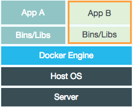

Open Source and JS Testing
Josh Thomas / @jthoms1

Open Source Development
- Our work is based on Open Source Software
- More secure
- Better community support
- Easier to understand/install
- Free
Open Source at Earthling Interactive
- Earthling Interactive (EI) will contribute/maintain our open source projects under the Earthling Interactive organization on Github.
- The work that is billed to Earthling Interactive and contributed to Open Source should be managed on a case by case basis through an assigned team leader(s).
- New open source projects must be reviewed and team leader(s) assigned prior to significant development work taking place.
- We will contribute to the projects of other organizations that we actively use.
- Time spent on Open Source projects will be billed to Earthling Interactive.
Code Seperation
- There should never be an issue with intellectual property being incorporated into these projects that might be deemed as property of our clients.
- At no point in time will code be copied from a project that was billed to a client to the Open Source project.
- We also will not bill client’s for work that is contributed to an open source project where that work will or may ultimately benefit the client.
- Our policy is to never incorporate ideas/code that is specific to a client’s domain expertise into the open source project.
Questions / Discussion
Live Demo

- Linux container used for Applications
- Virtualizes without an independent OS Kernel
- Isolates application from the rest of the OS
( port forwarding + dir sharing) - Highly efficient
How does Docker work?

- Linux containers (est 2008)
- Images are layered
- Small memory and storage footprint
- Uptime in ms
- Currently not common but insane growth
- Rapidly changing environment
What are the advantages?
Live Demo